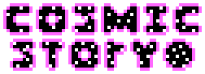

Well this is a very different interaction.
Game 2: Cosmic Story
Game 2, Cosmic Story, has now been announced in a brand new trailer.
I'd like to start with the story. You'll play as Axel, a high ranking agent within the Multiverse's defense forces. And there is a lot to defend from. From planetary threats to even black holes, it's all your job. While the first quarter of the game focuses on this, builds a story that results in a complete collapse of the dominoes.
The game will be broken into Episodes. Episode 1 will release for free soon as a demo on Steam. Then, Episode 2 will release as an update to said demo. After that, pay for the full game, and you'll get access to each episode as a free update. I cannot share a release date yet. As for the amount of episodes? I've written 8, and don't intend to write more than that, so I'm guessing there will be 8.
Some of you are probably wondering how Savior fits into the game. I think it's best to see Cosmic Story as its own title for now, and better to see how Savior fits into the overall story a little after.
Any other questions, for now, will be answered later.
What's Next?
Soon, I hope to have a concrete release date for Episode 1. I'm hesitant to show much. When Savior was still being regularly worked on, I revealed Master Star in a trailer, something I now regret. Needless to say, I won't be doing anything like that now.
I hope to have Episode 1 finished in a month or two, then thorough testing. But, it should be out by the end of the year. Episode 2 will take a while longer to make, but much more happens in that one. It's going to be a long time until the final episode...
For the sake of timelines, I started work on the game fully at the start of August. I'm not about halfway through the first Episode.
What about Savior?
Savior is finished. I recommend playing it actually, and getting a save file. You never know what could happen if you import Savior data into Cosmic Story. (nothing happens)
Username Axel Password Melody<3 Pin 0918